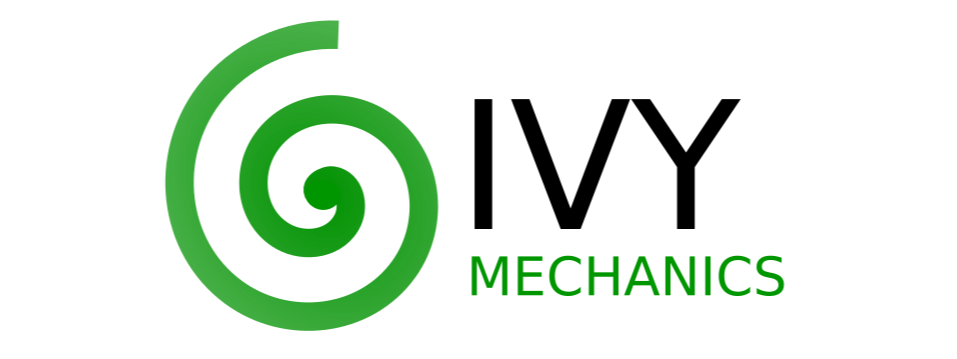

Mechanics functions with end-to-end support for machine learning developers, written in Ivy.
Contents¶
Overview¶
What is Ivy Mechanics?
Ivy mechanics provides functions for conversions of orientation, pose, and positional representations, as well as frame-of-reference transformations, and other more applied functions.
The library is built on top of the Ivy machine learning framework. This means all functions simultaneously support: Jax, Tensorflow, PyTorch, MXNet, and Numpy.
Ivy Libraries
There are a host of derived libraries written in Ivy, in the areas of mechanics, 3D vision, robotics, gym environments, neural memory, pre-trained models + implementations, and builder tools with trainers, data loaders and more. Click on the icons below to learn more!


Quick Start
Ivy mechanics can be installed like so: pip install ivy-mech
To quickly see the different aspects of the library, we suggest you check out the demos!
We suggest you start by running the script run_through.py,
and read the “Run Through” section below which explains this script.
For more interactive demos, we suggest you run either
target_facing_rotation_matrix.py or polar_to_cartesian_coords.py in the interactive demos folder.
Run Through¶
We run through some of the different parts of the library via a simple ongoing example script.
The full script is available in the demos folder, as file run_through.py.
First, we select a random backend framework to use for the examples, from the options
ivy.jax, ivy.tensorflow, ivy.torch, ivy.mxnd or ivy.numpy,
and use this to set the ivy backend framework.
import ivy
from ivy_demo_utils.framework_utils import choose_random_framework
ivy.set_framework(choose_random_framework())
Orientation Module
The orientation module is the most comprehensive, with conversions to and from all euler conventions, quaternions, rotation matrices, rotation vectors, and axis-angle representations.
A few of the orientation functions are outlined below.
# rotation representations
# 3
rot_vec = ivy.array([0., 1., 0.])
# 3 x 3
rot_mat = ivy_mech.rot_vec_to_rot_mat(rot_vec)
# 3
euler_angles = ivy_mech.rot_mat_to_euler(rot_mat, 'zyx')
# 4
quat = ivy_mech.euler_to_quaternion(euler_angles)
# 3, 1
axis, angle = ivy_mech.quaternion_to_axis_and_angle(quat)
# 3
rot_vec_again = axis * angle
Pose Module
The pose representations mirror the orientation representations, with the addition of 3 values to represent the cartesian position. Again, we give some examples below.
# pose representations
# 3
position = ivy.ones_like(rot_vec)
# 6
rot_vec_pose = ivy.concatenate((position, rot_vec), 0)
# 3 x 4
mat_pose = ivy_mech.rot_vec_pose_to_mat_pose(rot_vec_pose)
# 6
euler_pose = ivy_mech.mat_pose_to_euler_pose(mat_pose)
# 7
quat_pose = ivy_mech.euler_pose_to_quaternion_pose(euler_pose)
# 6
rot_vec_pose_again = ivy_mech.quaternion_pose_to_rot_vec_pose(quat_pose)
Position Module
The position module includes functions for converting between positional representations, such as cartesian and polar conventions, and for applying frame-of-reference transformations to cartesian co-ordinates.
We give some examples for conversion of positional representation below.
# conversions of positional representation
# 3
cartesian_coord = ivy.random_uniform(0., 1., (3,))
# 3
polar_coord = ivy_mech.cartesian_to_polar_coords(
cartesian_coord)
# 3
cartesian_coord_again = ivy_mech.polar_to_cartesian_coords(
polar_coord)
Assuming cartesian form, we give an example of a frame-of-reference transformations below.
# cartesian co-ordinate frame-of-reference transformations
# 3 x 4
trans_mat = ivy.random_uniform(0., 1., (3, 4))
# 4
cartesian_coord_homo = ivy_mech.make_coordinates_homogeneous(
cartesian_coord)
# 3
trans_cartesian_coord = ivy.matmul(
trans_mat, ivy.expand_dims(cartesian_coord_homo, -1))[:, 0]
# 4
trans_cartesian_coord_homo = ivy_mech.make_coordinates_homogeneous(
trans_cartesian_coord)
# 4 x 4
trans_mat_homo = ivy_mech.make_transformation_homogeneous(
trans_mat)
# 3 x 4
inv_trans_mat = ivy.inv(trans_mat_homo)[0:3]
# 3
cartesian_coord_again = ivy.matmul(
inv_trans_mat, ivy.expand_dims(trans_cartesian_coord_homo, -1))[:, 0]
Interactive Demos¶
In addition to the run through above, we provide two further demo scripts, which are more visual and interactive, and are each built around a particular function.
Rather than presenting the code here, we show visualizations of the demos. The scripts for these demos can be found in the interactive demos folder.
Target Facing Rotation Matrix
The first demo uses the method ivy_mech.target_facing_rotation_matrix to dynamically
track a moving target plant pot with a camera, as shown below:

Polar to Cartesian Co-ordinates
The second demo uses the method ivy_mech.polar_to_cartesian_coords to convert a polar depth image
acquired from an omni-directional camera into cartesian co-ordinates,
enabling the surrounding geometry to be represented as a point cloud, for interactive visualization.

Get Involed¶
We hope the functions in this library are useful to a wide range of machine learning developers. However, there are many more areas of mechanics which could be covered by this library.
If there are any particular mechanics functions you feel are missing, and your needs are not met by the functions currently on offer, then we are very happy to accept pull requests!
We look forward to working with the community on expanding and improving the Ivy mechanics library.
Citation¶
@article{lenton2021ivy,
title={Ivy: Unified Machine Learning for Inter-Framework Portability},
author={Lenton, Daniel and Pardo, Fabio and Falck, Fabian and James, Stephen and Clark, Ronald},
journal={arXiv preprint arXiv:2102.02886},
year={2021}
}
Documentation Tree¶
Orientation
Position